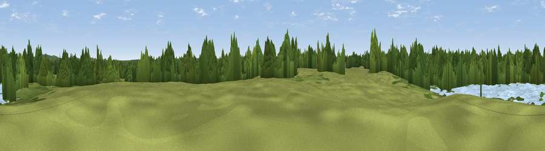

Viewpoint near Woodley
#44277 in England · top 67% of its area beats it · near WoodleyWhere it is
The exact computed spot (SU 77655 74441). Click the marker for map links.
The view, rendered

A 360° render of this exact spot computed from the terrain model, tree cover and land cover — summer colours, afternoon light, calibrated against photographs of famous viewpoints. Real trees, hedges and buildings will differ in detail.
The panorama
Grey silhouette: terrain skyline in each direction (720 bearings, Earth curvature and refraction included). Dashed green: skyline with trees (+15 m) and buildings (+8 m) as obstacles. Blue strip: how far the ground is visible on each bearing.
Where the view opens
Wedge length = distance to the farthest visible ground on that bearing (vegetation-aware). Rings at 10, 25 and 50 km.
What fills the view
47% woodland · 27% grassland · 13% water · 10% built-up · 3% cropland
Angular shares of the visible panorama (visual magnitude), not map area. Landscape diversity 0.57 (0–1 Shannon).
Key numbers
More beautiful places nearby
The staircase of upgrades: each row has a higher view potential than everything closer. Driving times are estimates from straight-line distance, calibrated against real road routing — check an actual route before setting out.
| Place | Direction | Drive | Score |
|---|---|---|---|
| Warren Hill | NNW · 4 km | ~9 min | 19.0 |
| Viewpoint near Dunsden Green | WNW · 4 km | ~10 min | 20.3 |
| Viewpoint near Lower Shiplake | N · 6 km | ~13 min | 28.2 |
| Viewpoint near Kiln Green | NNE · 6 km | ~13 min | 28.9 |
| Viewpoint near Knowl Hill | NE · 8 km | ~16 min | 30.1 |
| Viewpoint near Mapledurham | WNW · 11 km | ~21 min | 32.0 |
| Viewpoint near Hambleden | N · 12 km | ~22 min | 32.4 |
| Viewpoint near Mapledurham | WNW · 12 km | ~22 min | 35.0 |
51.46362, -0.88355 · source: osm viewpoint · position refined by local search. Computed location — check access rights before visiting.